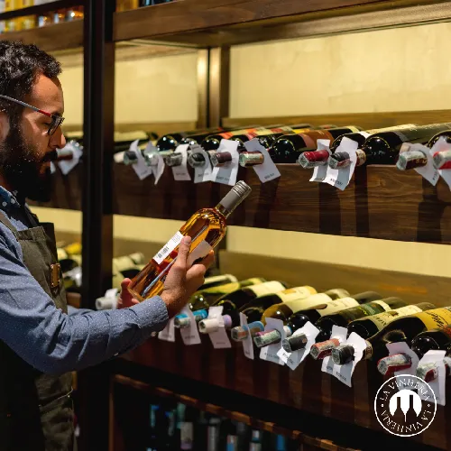

Sobre Nós
A Vinheria

- A Vinheria Agnello é uma empresa familiar dirigida pelo proprietário Giulio e sua filha Bianca. Iniciou
suas atividades em São Paulo há mais de 15 anos,
contando com uma loja física onde coloca à disposição do mercado uma
vasta gama de rótulos de vinícolas nacionais e internacionais.
Armazenagem controlada

- A Vinheria
Agnello adota cuidados especiais na
armazenagem de seus vinhos, buscando assim garantir a
seus clientes a qualidade
original de cada garrafa, como recebida
de seus fornecedores ou mesmo das
vinícolas de origem.
Atendimento
- Nossos vendedores estão prontos para orientar os clientes
quanto às características de cada tipo de uva,
região, vinícola ou rotulo de vinho, entre outros
detalhes relevantes, sugerindo com base nesse
conhecimento harmonizações com os mais
diversos tipos de alimentos e refeições, e a
adequação de vinhos às diferentes ocasiões de consumo